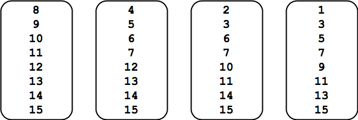
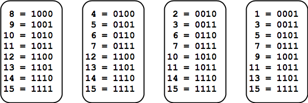

Système binaire¶
Le système binaire est la base de toute représentation d’information dans un ordinateur.
Tour de magie¶
Nous commençons ce chapitre par un tour de magie. Pensez à un nombre entre 0 et 15, mais ne le dites pas.

Votre nombre, se trouve-t-il sur la
première carte ? – oui
deuxième carte ? – oui
troisième carte ? – non
quatrième carte ? – oui
Alors vous avez pensé à 13.
Encore une fois!
Pensez à une autre nombre entre 0 et 15.
Votre nombre, se trouve-t-il sur la
première carte ? – non
deuxième carte ? – oui
troisième carte ? – oui
quatrième carte ? – oui
Alors vous avez pensé à 7.
Astuce: Vous pouvez imprimer ces 4 cartes pour présenter le tour de magie à vos amis.
faites un clic-droit sur l’image
choisissez Ouvrir l’image dans un novel onglet
imprimez la page
Comment ça fonctionne?¶
Pour vous donner un indice, nous ajoutons à ces nombres leur code binaire.

Regardez bien ce qui est commun aux séquences binaires de chaque carte.
Vous trouvez l’aspect commun ?
Code binaire¶
Un vrai magicien ne divulgue jamais comment fonctionne son tour de magie.
Mais vous avez maintenant assez d’indices pour trouver la solution par vous mêmes.
Pour vous donner encore un indice, pensez de nouveau à un nombre entre 0 et 15, mais cette fois ne le représentez pas en décimal, mais avec un code binaire de 4 chiffres (lu de droite à gauche).
Voici les quatre questions. Est-ce que le
premier chiffre est 1 - oui
deuxième chiffre est 1 - oui
troisième chiffre est 1 - non
quatrième chiffre est 1 - oui
Alors, le nombre auquel vous avez pensé est 1101.
Ceci correspond au nombre décimal 13 (comme dans l’exemple du début).
En fait chaque symbole du code binaire correspond à un puissance de 2.
\(2^3\) |
\(2^2\) |
\(2^1\) |
\(2^0\) |
|---|---|---|---|
8 |
4 |
2 |
1 |
1 |
1 |
0 |
1 |
Pour trouver la valeur du code 1101 nous devons additionner leur poid, donc 8 + 4 + 1 = 13.
L’autre exemple était:
\(2^3\) |
\(2^2\) |
\(2^1\) |
\(2^0\) |
|---|---|---|---|
8 |
4 |
2 |
1 |
0 |
1 |
1 |
1 |
Pour trouver sa valeur nous faisons le calcul 4 + 2 + 1 = 7.
Exercice
Quelle est la valeur du code binaire 1010 ?
Du code binaire 10000 ?
La fonction bin¶
Python possède une fonction bin() qui transforme un décimal en binaire.
Par exemple voici le code binaire de 9.
bin(9)
'0b1001'
Dans la réponse, le terme 0b est ajouté au début du code binaire pour le différencier d’un nombre décimal. En utilisant la fonction bin() nous pouvons maintenant imprimer les nombres de 0 à 15.
for i in range(8):
print(i, '=', bin(i))
0 = 0b0
1 = 0b1
2 = 0b10
3 = 0b11
4 = 0b100
5 = 0b101
6 = 0b110
7 = 0b111
En Python nous pouvons représenter un nombre sous sa forme binaire en le précédent de 0b. Voici la séquence 101 en binaire et en décimal.
0b101, 101
(5, 101)
Exercice
Quel est le code binaire pour 11.
La chaîne avec formatage¶
La chaîne avec formatage (f-string en anglais) est très utile pour afficher des codes binaires, et c’est une méthode plus puissante que la fonction bin().
Un f-string est une chaîne de caractères qui
commence par
fcontient des accolades
{}(alt+8/9) qui peuvent contenir des variables avec description de format
Par exemple:
{i:2}imprime la variableisur 2 positions (en décimal){i:4b}imprime la variableisur 4 positions en binaire
Ceci nous permet d’aligner les nombres décimaux et binaires à droite.
for i in range(16):
print(f'{i:2} = {i:4b}')
0 = 0
1 = 1
2 = 10
3 = 11
4 = 100
5 = 101
6 = 110
7 = 111
8 = 1000
9 = 1001
10 = 1010
11 = 1011
12 = 1100
13 = 1101
14 = 1110
15 = 1111
Au lieu de mettre un espace, le zéro est fréquemment utilisé pour créer des nombres qui ont tous la même longueur. Le f-string permet de choisir le symbole de rembourrage (padding).
{i:02}imprimer la variableisur 2 positions (rembourré avec des0){i:04b}imprimer la variableisur 4 positions en binaire (rembourré avec des0)
for i in range(16):
print(f'{i:02} = {i:04b}')
00 = 0000
01 = 0001
02 = 0010
03 = 0011
04 = 0100
05 = 0101
06 = 0110
07 = 0111
08 = 1000
09 = 1001
10 = 1010
11 = 1011
12 = 1100
13 = 1101
14 = 1110
15 = 1111
Exercice
Affichez les codes binaires pour les nombres 250 à 255.
Programmer un quiz¶
Nous allons créer un quiz pour apprendre le code binaire. Nous commençons par créer une liste de nombres que nous voulons utiliser dans le quiz.
nombres = list(range(8))
nombres
[0, 1, 2, 3, 4, 5, 6, 7]
Du module random nous importons la fonction shuffle. Cette fonction permet de réarranger une liste de façon aléatoire. L’avantage de cette méthode est que chaque élément est testé une seule fois.
from random import shuffle
shuffle(nombres)
nombres
[6, 4, 1, 3, 0, 2, 7, 5]
Voici le code de ce quiz. Vous pouvez le copier et vous entrainer à apprendre le code binaire.
from random import shuffle
n = 8
nombres = list(range(n))
shuffle(nombres)
print('Quiz: binaire en décimal')
score = 0
for i in nombres:
reponse = input(f'{i:04b}:')
if int(reponse) == i:
score += 1
else:
print('faux! réponse correcte =', i)
print('score =', score, 'sur', n)
Quiz: binaire en décimal
0001: 1
0110: 6
0111: 7
0011: 3
0101: 5
0000: 8
faux! réponse correcte = 0
0010: 2
0100: 4
score = 7 sur 8
Attention:
Il est possible que l’indicateur de cellule reste à [*] ce qui indique que l’exécution n’est pas terminée.
En haut à droite vous avec Python 3 ⚫️ (noyau en tour d’exécution).
Si nécessaire vous pouvez interrompre l’exécution avec le bouton ◼️.
Exercice¶
Créez le quiz inverse, où il faut trouver le code binaire pour un nombre donné en format décimal.
Les chiffres¶
Nous appelons base b le nombre de chiffres utilisé pour représenter un nombre.
Dans le système de base 10 (système décimal) nous utilisons les chiffres
'0123456789'
Dans le système de base 2 (système binaire) nous utilisons seulement
'01'
et dans le système héxadécimal nous utilisons 16 symboles.
'0123456789ABCDEF'
Le système positionnel¶
Dans un système positionnel la valeur d’un symbole est déterminée par
sa propre valeur,
sa position dans la séquence.
Un nombre est représenté par une séquence de chiffres. Par exemple:
n = '2021'
La valeur d’un chiffre dépend de sa position.
le premier 2 a la valeur 2000
le deuxième 2 a la valeur 20
Nous pouvons représenter un nombre n dans une base b par une séquence de chiffres c dont les indices i vont de 0 à m-1.
La valeur de cette séquence des chiffres est
La valeur du nombre est donc la somme des valeur du chiffre \(c_i\) multipliée par son poids \(b^i\).
Indexage¶
La fonction range(m) nous donne la liste des indices 0 à m-1 dont nous aurons besoin pour les calculs.
m = 8
list(range(m))
[0, 1, 2, 3, 4, 5, 6, 7]
Seulement, nous avons pris l’habitude d’écrire les nombres de droite à gauche.
Donc l’indice m-1 se trouve à gauche et l’indice 0 à droite.
L’opérateur de tranche [::-1] permet d’inverser l’ordre d’une liste.
list(range(m))[::-1]
[7, 6, 5, 4, 3, 2, 1, 0]
Le poids des positions¶
Le poids du chiffre \(c_i\) est \(b^i\), donc la puissance de la base b et sa position i.
Les poids pour 5 positions décimales est
[10**i for i in range(5)][::-1]
[10000, 1000, 100, 10, 1]
Pour reprendre le nombre 2021 sa décomposition est
2*1000 + 0*100 + 2*10 + 1
2021
Les poids du système binaire sont des puissances de 2.
poids = [2**i for i in range(8)][::-1]
print(*poids, sep='\t')
128 64 32 16 8 4 2 1
Exercice
Affichez 5 poids du système octal (base 8).
Du binaire en décimal¶
Nous pouvons donc calculer la valeur de la séquence binaire et l’exprimer en décimal.
Affichons les 8 poids binaires et les 8 chiffres binaires ensemble.
c = '10010100'
print(*poids, sep='\t')
print(*c, sep='\t')
128 64 32 16 8 4 2 1
1 0 0 1 0 1 0 0
La valeur représentée par 10010100 correspond à
128 + 16 + 4
148
Nous pouvons visualiser cet algorithme en Python. L’indexe c[m-1-i] tient compte du sens d’indexation de la séquence des chiffres de droite à gauche.
c = '10010100'
m = len(c)
n = 0
for i in range(m):
if c[m-1-i] == '1':
print('+', 2**i)
n += 2**i
print('=', n)
+ 4
+ 16
+ 128
= 148
Nous pouvons maintenant définir une fonction bin2dec qui fait la conversion chaîne binaire vers nombre décimal.
def bin2dec(c):
m = len(c)
n = 0
for i in range(m):
if c[m-1-i] == '1':
n += 2**i
return n
bin2dec('10010100')
148
Python avancé¶
La compréhension de liste permet d’écrire la liste des termes \(c_i b^i\) en une seule ligne.
[int(c[m-1-i]) * 2**i for i in range(m)]
[0, 0, 4, 0, 16, 0, 0, 128]
La fonction sum permet de sommer les éléments de cette liste.
sum([int(c[m-1-i]) * 2**i for i in range(m)])
148
La notation Python est pratiquement identique à la formule mathématique.
Du décimal en binaire¶
L’algorithme de conversion décimale en binaire utilise
division entière
//division modulo
%
n = 148
c = ''
while n > 0:
c = str(n % 2) + c
n = n // 2
print(c)
10010100
Nous en créons une fonction
def dec2bin(n):
c = ''
while n > 0:
c = str(n % 2) + c
n = n // 2
return c
dec2bin(148)
'10010100'
Exercice¶
Créez une fonction qui permet de choisir la base, par exemple 3, 4 et 5 et convertit du système décimal vers ce système.